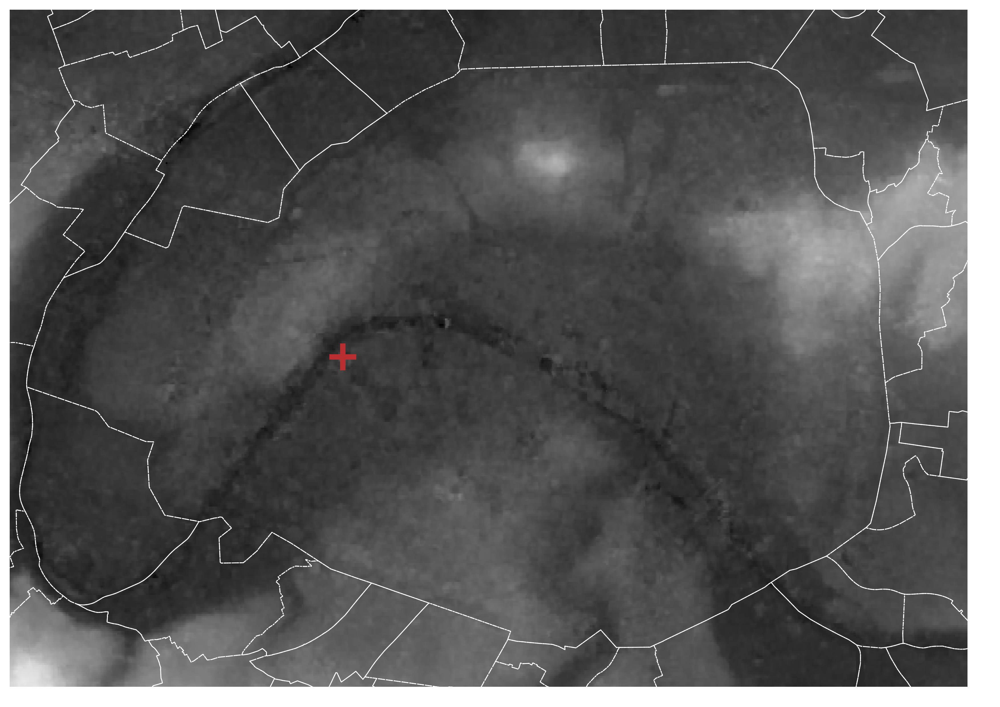
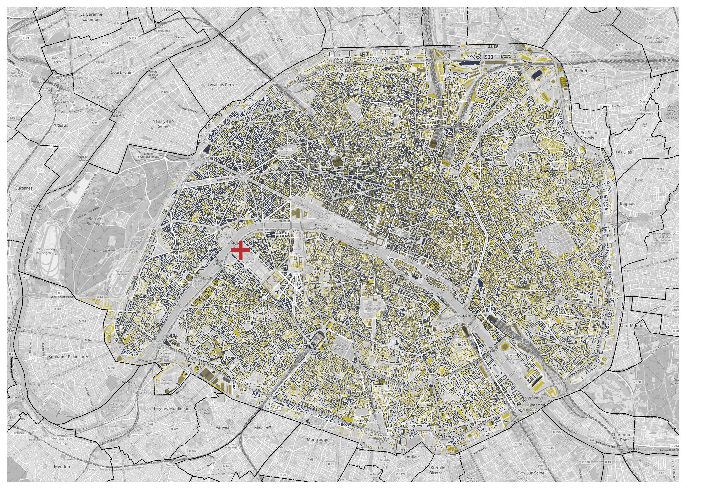
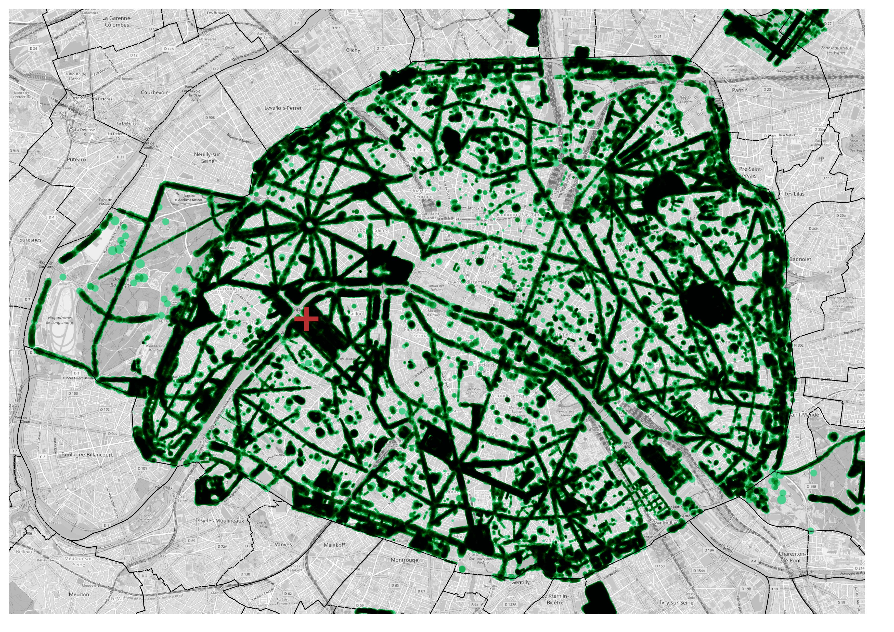
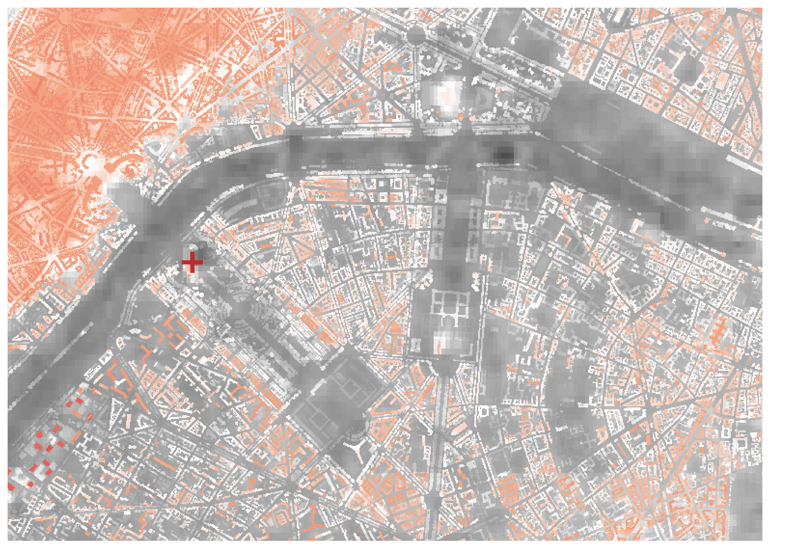
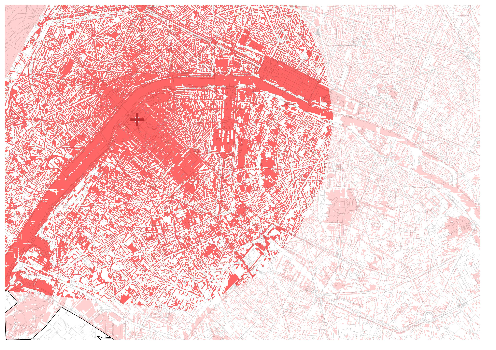
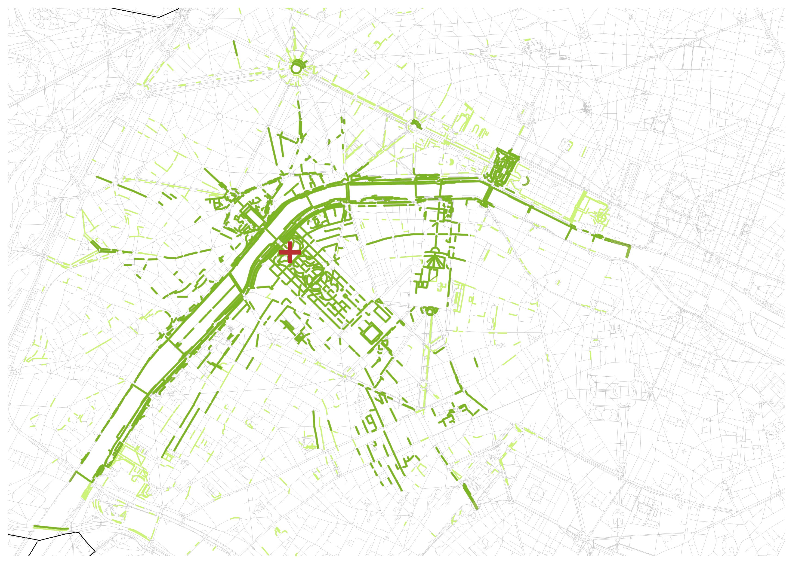

Streets with Tour Eiffel
August 30, 2022
Every time I visit Paris, I engage myself in playing "Spot the Eiffel" game. Once on a clear day, I was surprised to spot a little portion of Tour Eiffel from an alley some 2 km on the other side of the Seine. Excited, I climbed Montmartre hoping to spot the Eiffel from the Sacre-Coeur, but with a crow fly distance of over 4 km, the giant tower gets hazy and is just narrowly obstructed by trees.
This inspired me to question:
From what all streets can one spot the Eiffel Tower, even a little portion?
I decided to keep the scope of this question only to ground level streets and public spaces. Therefore, my output will be just stretches of streets and piazzas with a view of the Eiffel Tower. Such visibility analyses are often done with GIS tools such as viewshed analysis.
As I kept the observer fixed on the ground level, there would be four factors defining the visibility to the Tower:
- Elevation
- Buildings
- Trees
- Atmosphere
Viewshed in ArcGIS is an interesting spatial analyst tool to determine the raster surface locations visible to a set of observer features. Conducting this exercise requires an elevation raster with the vector points of observation and their respective heights. While using this tool was easy, collecting and compiling the ingredients was a task.




For that, first I extracted and clipped a Digital Elevation Model (DEM) from ASTER NASA Earth Data. The best resolution I could acquire was 30 m. For building and tree cover, I downloaded their shapefiles from Paris's open data portal. I rasterized them with the resolution of 1 m and assigned their height as the z-coordinate. For the building layer, the original data did not have exact height but only the maximum number of floors (including some zero values!). To resolve this, I factors in an assumed average wall height of 3.5 m and went on with the rasterization. Trees, on the other hand were tricky. The data was a point layer with fields for approximate height and circumference (from which I mapped their radius and made circular buffer). But for rasterization, only the tallest overlapping tree section had to be selected. Therefore, all the buffers were intersected with themselves and duplicate geometries were deleted except the highest values, followed by their rasterization.
Considering the processing capacity of my computer, I decided to limit the scope of this analysis within the boundaries of the city of Paris and also deleted the extensions of Bois de Boulogne and Bois de Vincennes. However, there are several locations outside the city boundary from where the Eiffel Tower can be seen.
Now, to compile the final raster surface, I developed a Digital Surface Model (DSM) by merging the elevation with the rasters of buildings and tress, and resampled the resolution to 2.5m. The point location of the Eiffel Tower has an elevation of 30m and its own height is 330m. Likewise, the average height of an observer (offset) was set as 1.6m. Refractivity coefficient that defines the atmospheric visibility was kept at the default value of 0.13. With these components, the Viewshed 2 tool in ArcMap 10.7.1 produced a raster with the view of the Tower from the entire DSM in the form of visible / non-visible pixels. Here, the top of buildings and tree cover that come under the Tower's viewshed are also identified. But these pixels are to be removed, given our observer is only at ground level (DEM) and buildings and tree heights were only added as obstructions, and not observation points.


Lastly, the output viewshed raster is intersected with the street layer of Paris and clipped to 3 km assuming that as the visual range of an average eye in an urban atmosphere. As seen from the result, due to the coarse resolution and general inaccuracy in data (such as mapping exact tree canopy in a city), streets other than actual ones with a view of the Tower are also identified by the analysis. To enhance the accuracy, I skimmed through Google Streetview and deleted wrongly identified streets and those going through parks.
The final result is this estimated map of streets in the city of Paris from where one can expect to spot the Eiffel Tower on a clear day.
Bisous!
References
- Cassatella C.; Carlone G. (2013). GIS-based visual analysis for planning and designing historic urban landscapes. In: 2013 Digital Heritage International Congress, Marseille (FR), 28 oct-1 Nov. pp. 45-52
- Garnero, Gabriele & Fabrizio, Enrico. (2015). Visibility analysis in urban spaces: a raster-based approach and case studies. Environment and Planning B: Planning and Design. 0-0. 10.1068/b130119p
Rues avec vue sur la Tour Eiffel
30 août 2022
Chaque fois que je visite Paris, je me lance dans le jeu « Où est la Tour Eiffel ». Un jour de ciel dégagé, j'ai été surprise d'apercevoir une petite partie de la Tour Eiffel depuis une ruelle à environ 2 km de l'autre côté de la Seine. Excitée, j'ai gravi Montmartre dans l'espoir d'apercevoir la Tour Eiffel depuis le Sacré-Cœur, mais à vol d'oiseau de plus de 4 km, la tour géante devient brumeuse et est tout juste obstruée par les arbres.
Cela m'a inspirée à me demander :
Depuis quelles rues peut-on apercevoir la Tour Eiffel, ne serait-ce qu'un petit bout ?
J'ai décidé de limiter la portée de cette question aux seules rues de plain-pied et aux espaces publics. Par conséquent, mon résultat se résume à des tronçons de rues et de places offrant une vue sur la Tour Eiffel. Ces analyses de visibilité sont souvent réalisées avec des outils SIG, comme l'analyse de champ de visibilité (viewshed).
En conservant l'observateur au niveau du sol, quatre facteurs définissent la visibilité de la Tour :
- L'altitude
- Les bâtiments
- Les arbres
- L'atmosphère
Viewshed dans ArcGIS est un outil d'analyse spatiale intéressant pour déterminer les emplacements de surface raster visibles depuis un ensemble d'observateurs. Réaliser cet exercice nécessite un raster d'altitude avec les points vectoriels d'observation et leurs hauteurs respectives. Bien que l'outil fût simple d'utilisation, la collecte et la compilation des ingrédients était tout un travail.
Pour cela, j'ai d'abord extrait et découpé un Modèle Numérique d'Altitude (DEM) depuis ASTER NASA Earth Data. La meilleure résolution que j'ai pu obtenir était de 30 m. Pour les bâtiments et la couverture arborée, j'ai téléchargé leurs shapefiles depuis le portail open data de Paris. Je les ai rasterisés avec une résolution de 1 m et j'ai attribué leur hauteur comme coordonnée z. Pour la couche des bâtiments, les données d'origine ne comportaient pas la hauteur exacte mais seulement le nombre maximum d'étages (incluant des valeurs nulles !). Pour résoudre cela, j'ai pris en compte une hauteur moyenne de mur supposée de 3,5 m et j'ai poursuivi la rasterisation. Les arbres, quant à eux, étaient délicats. Les données consistaient en une couche de points avec des champs pour la hauteur et la circonférence approximatives (à partir desquelles j'ai défini leur rayon et créé un tampon circulaire). Mais pour la rasterisation, seule la section d'arbre la plus haute devait être sélectionnée. Par conséquent, tous les tampons ont été intersectés entre eux et les géométries en double ont été supprimées à l'exception des valeurs les plus élevées, suivies de leur rasterisation.
Compte tenu de la capacité de traitement de mon ordinateur, j'ai décidé de limiter la portée de cette analyse aux limites de la ville de Paris et j'ai également supprimé les extensions du Bois de Boulogne et du Bois de Vincennes. Cependant, il existe plusieurs endroits en dehors des limites de la ville d'où l'on peut voir la Tour Eiffel.
Ensuite, pour compiler la surface raster finale, j'ai développé un Modèle Numérique de Surface (DSM) en fusionnant l'altitude avec les rasters des bâtiments et des arbres, et j'ai rééchantillonné la résolution à 2,5 m. L'emplacement de la Tour Eiffel a une altitude de 30 m et sa hauteur propre est de 330 m. De même, la hauteur moyenne d'un observateur (déport) a été fixée à 1,6 m. Le coefficient de réfraction qui définit la visibilité atmosphérique a été conservé à la valeur par défaut de 0,13. Avec ces composants, l'outil Viewshed 2 dans ArcMap 10.7.1 a produit un raster représentant la vue de la Tour depuis l'ensemble du DSM sous forme de pixels visibles / non visibles. Ici, le sommet des bâtiments et la couverture arborée qui se trouvent dans le champ de visibilité de la Tour sont également identifiés. Mais ces pixels doivent être supprimés, étant donné que notre observateur se trouve uniquement au niveau du sol (DEM) et que les hauteurs des bâtiments et des arbres n'ont été ajoutées que comme obstructions, et non comme points d'observation.
Enfin, le raster du champ de visibilité résultant est intersecté avec la couche des rues de Paris et découpé à 3 km, considérant cela comme la portée visuelle d'un œil moyen dans une atmosphère urbaine. Comme le montre le résultat, en raison de la résolution grossière et de l'imprécision générale des données (comme la cartographie exacte de la canopée arborée en ville), des rues autres que celles ayant réellement une vue sur la Tour sont également identifiées par l'analyse. Pour améliorer la précision, j'ai parcouru Google Streetview et supprimé les rues mal identifiées ainsi que celles traversant des parcs.
Le résultat final est cette carte estimée des rues de Paris d'où l'on peut s'attendre à apercevoir la Tour Eiffel par temps clair.
Bisous !
Références
- Cassatella C.; Carlone G. (2013). GIS-based visual analysis for planning and designing historic urban landscapes. In: 2013 Digital Heritage International Congress, Marseille (FR), 28 oct-1 Nov. pp. 45-52
- Garnero, Gabriele & Fabrizio, Enrico. (2015). Visibility analysis in urban spaces: a raster-based approach and case studies. Environment and Planning B: Planning and Design. 0-0. 10.1068/b130119p